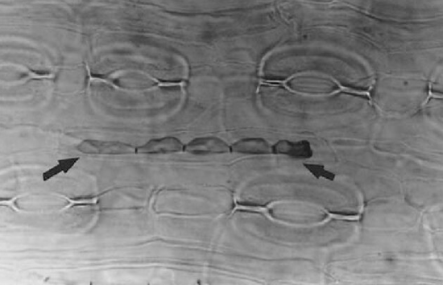

Some Natural History
The Douglas-fir is native to the west coast of North America,
found everywhere from Mexico to Canada.
The tree is tolerant of drought. It loves rain.
It is fire-adapted: depending on fire to get started, able to survive all but the
most severe fires when it reaches maturity.
It can live a thousand years.
We have no typhoons, no hurricanes, so these strong trees can grow tall.
Even so, the biggest firs, like this one, often have a broken top, succumbing
often enough to the more moderate storms we do have.
When that happens, apical dominance ends, and side ("epicormic") branches
pop out below the crown, often growing large and tangled, reaching out for sunlight.

Fire History
A severe fire ravaged the Puget Lowlands in 1508, burning everything to the ground
here at Seward Park.
A more moderate regional fire burned here in 1701. It destroyed many species.
But a cohort of 200 year-old doug firs, each with thick bark, survived.
You can see burned bark on this tree, and on many others throughout
the forest.

A few large cedars also survived this fire. It is likely that most
of the sword ferns did too. Their woody rhizomes, nestled below
ground, protected by soil.
It Takes a Community
This long-lived creature, our Big Tree, is (like all green plants)
supremely skilled at transforming sunlight into long carbon chains
packed with energy. Aka "food".
There are a thousand kinds of smaller creatures in the forest hungry
for that food. Many of them - doug fir predators - have short life spans. Which means
they can quickly evolve cunning new ways to get at Big Tree's carbon chains,
in its needles, sap, and roots.
And Big Tree has only the defenses with which it was born.
How does it survive?
We hear a lot these days about below ground fungal networks connecting
and protecting trees in the forest.
Endophytes are not so well known, tiny microbes that live
in the leaves and needles of most plants. Including our long-lived firs.
We introduce you to Rhabdocline Parkeri. Millions of years ago,
this tiny fungus struck a deal with doug-firs. In exchange for some of
the energy the tree acquires from the sun, and packages up into
long carbon chains, the fungus emits insecticides. Which protect the tree.

Crucially, R.parkeri's life span is matched to the predatory microbes and insects,
so as they invent new strategies to get at the doug fir, R.parkeri invents
new defenses.
It is likely that R.parkeri was originally an antagonist,
going after the tree's food without offering anything in return.
Related Rhabdocline fungi do exactly that, causing disease in some
doug-firs. But as with many other microbes, a symbiotic relationship
evolved over time. Mutual aid, mutual benefits ensued.
Which we see here in this old and beautiful tree
This symbiosis is exceedingly common in the forest and,
indeed, in all of us mammals- humans included. Many symbiotic
microbes live in our bellies. They take a small share of the food we eat,
offering digestive help and some disease protection in return.
Life is indeed a community affair.